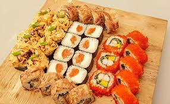

"Суши-хата"
|  |
Виды суши
- Маки
- Хосомаки
- Футомаки
- Урамаки
- Тэмаки
- Нигири
- Гунканы
|
|
О суши
|
|
Меню
|
|
Рестораны
|
|
Суши - это блюдо традиционной японской кухни,
приготовленное из риса с уксусной приправой и различных морепродуктов,
а также других ингредиентов.
|
- Маки
- Хосомаки
- Футомаки
- Урамаки
- Роллы
- Нигири
- Гунканы
- Суширито
- Соусы
- Десерты
- Напитки
|
Отправлять кусочек маринованного имбиря в рот одновременно с роллами или суши — не по этикету. Его сильный вкус и аромат не позволит вам в полной мере насладиться угощением. |
|
Самым популярным японским блюдом является суши, его можно считать визитной карточкой японской кухни. Япония располагается на островах, окруженных морем, которое богато разнообразными рыбами, моллюсками и ракообразными.
|
Все рестораны предлагают одно и то же меню и преследуют одну и ту же цель: продемонстрировать все многообразие азиатской кухни, а тех гостей, кто с этой кухней давно знаком, порадовать идеально приготовленными блюдами. Китайская утка по-пекински, таиландский кокосовый суп Том Кха и острый Том Ям, японские десерты моти, различные виды лапши и риса, птица, мясо, морепродукты — мы постарались охватить все знаковые и любимые во всем мире блюда из Азии. |
- ул. П.Глебки, 5 (ТЦ "Скала")
- Партизанский просп. 150А(ТЦ "МОМО")
- ул. Петра Мстиславца 11(ТЦ "Dana Moll")
|
Ингредиенты для приготовления
- Начинка
- Рыба
- Морепродукты
- Овощи
- Основа
- Рис
- Нори
- Специальный соус
- Приправы
- Соевый соус
- Васаби
- Имбирь
|
Многие считают, что суши и роллы вообще нельзя хранить. Если суши приготовлены из сырой рыбы, нужно съесть их в течение часа. В холодильнике их можно хранить максимум 3–4 часа, обязательно накрыв пищевой пленкой, иначе они заветрятся и высохнут.
|